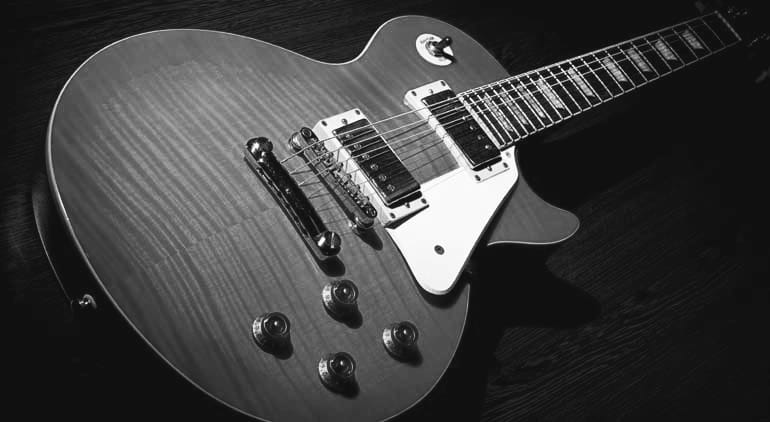
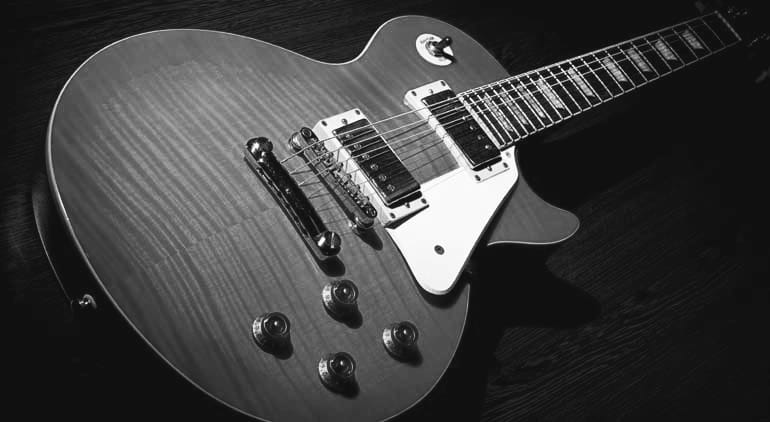

Sobre el mato
Santiago: Elegimos un nombre que no sea típico para salir del molde. Es un chiste, para reírnos de esos típicos nombres de artistas o bandas. Estábamos en una fiesta, medio borrachos.... Manuel: Estábamos medio al pedo y teníamos algunos otros como "¿Querías un milagro John? Te presento al FBI", que es una frase de Duro de matar, una de mis películas de cabecera. Ese día estábamos mirando una película medio trucha y salió un subtítulo que decía "él mató a un policía motorizado" y dijimos "véngale"
 Imagen de la banda en sus primeros años
Imagen de la banda en sus primeros años


 
